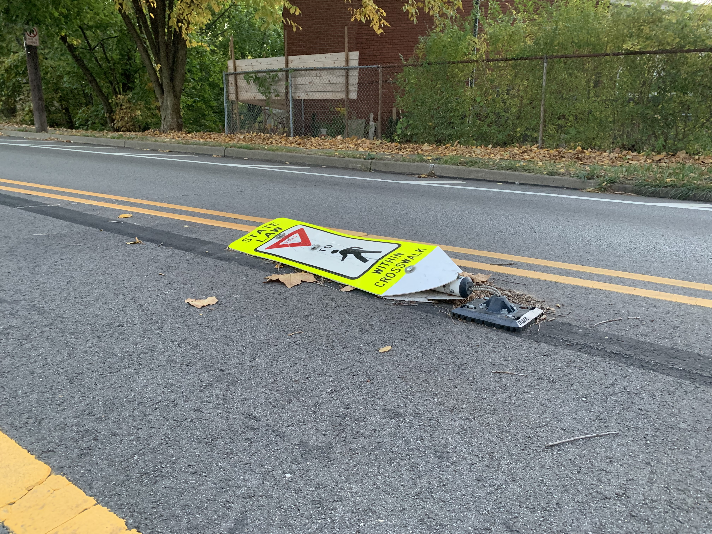

Lori waited outside the HR office of Symtek Call Center. Her fingers turned pale as she squeezed the portfolio. She adjusted the sleeves of her ill-fitting suit jacket and regretted keeping the massive shoulder pads. What am I thinking? she snapped at herself. She could never alter her grandmother's jacket. Was she wearing the heirloom for good luck or because it was the only professional attire she owned? Two things could be true.
Several other sweaty applicants filled up the chairs in the cramped waiting room. She wished more than anything to finish her interview and escape but dreaded the idea of being next. She also dreaded the idea of becoming a call assistant. There was dread in every direction.
This happened every time. With this being the sixth interview, she thought she would feel comfortable doing this, but six rejections only put more pressure on this one. She had been told it would be easy to land a job doing basic mindless work, but despite her widespread applications, it had not been “easy.”
The door opened. Another interviewee marched out of the office with a smug grin on his face. The balding man behind him, adorned in a blue shirt and jeans, propped open the HR office door as the applicant left. He tapped his clipboard with his pen. “Lori Baker?” he read.
Lori shot out of her chair and almost dropped her portfolio. She followed him into the office full of stale air.
Once she sat down, Lori opened her portfolio and removed a resume. “I have a copy of my resume if you need one.”
Without looking up, Toby Hoover—as his nametag dictated—waved his hand in the air. “I got one.”
Sweating, Lori shoved the paper into the portfolio, accidentally crumpling it up.
He slumped into his chair while frowning at his clipboard. “I see a lot of fast food here,” he mumbled.
“I’ve had to move a lot for school,” Lori recited. “As a cashier, I gained a lot of customer service experience.”
“It says here that you graduated three years ago.”
Lori forced a chuckle. “Yes, I took a break from school and work after I graduated.” Was it an intentional break? No, not really.
“Hmph…” he grumbled. “I see your death date here listed as ‘not applicable.’ Did you mean to write ‘five plus’?”
“No, I don’t have a death date certificate.”
“Do you really expect someone to hire you if they don’t know how long you can reliably commit to their company?”
Lori took a deep breath. Sure, other interviewers asked about the missing death date, but they had not been so direct. “I am a Necroignorancer. We live not knowing how we die,” Lori recited.
Toby shrugged. “I didn’t say how you die; I said when you die. You don’t have to know how. That’s optional on the new machines.”
Her blood was bubbling, and not because of the hot, stifling air. “Not knowing my death date is an integral part of my culture,” Lori said with confidence. “You cannot discriminate against me for not having my death date listed.”
Toby rolled his eyes. “Sure, sure. Next question: What qualities do you value…”
She understood Toby had to finish the interview so the company couldn’t be sued for religious discrimination. It was 2021, after all. Lori couldn’t afford it, anyway.
For the rest of the interview, Lori sat with a stiff spine and answered the rest of the mandated questions through gritted teeth.